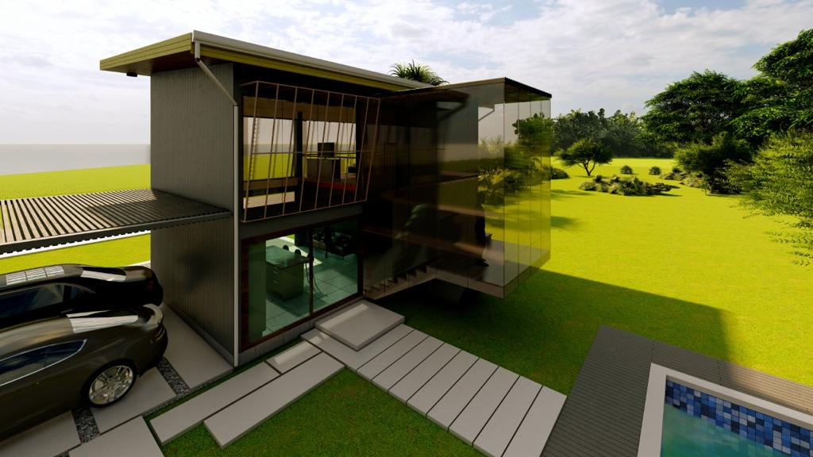

DISEÑO SOSTENIBLE Y CERTIFICACIÓN BAJOS LOS ESTÁNDARES LEED

Nuestros clientes son conscientes del impacto ambiental que tienen sus proyectos, por eso hemos invertido en capacitar a nuestro equipo de arquitectos en diseño sostenible bajo la norma LEED (Leadership in Energy and Environmental Design), desarrollada en los Estados Unidos por el Green Building Council. Siguiendo pautas de esta norma, ahorramos agua y energía, así como ambientes más sanos para mejorar el bienestar y la productividad de quienes interactúan en nuestros espacios.